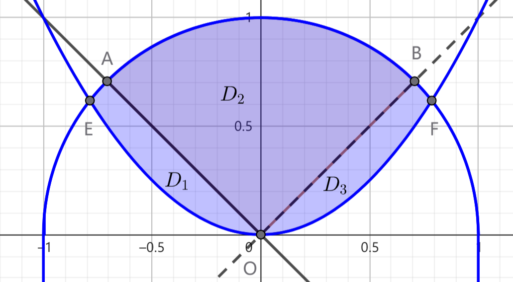

题目编号依据红宝书2023年版
极限与函数
【例1.9】求 $\displaystyle I=\lim_{x \to 1^-} \frac{\ln (1-x) + \tan\dfrac{\pi}{2}x}{\mathrm{cot}\pi x}$
点击展开解答
解：将原极限拆分成两项极限之和，则可得：
$$I_1 = \lim_{x \to 1^-} \frac{\ln(1-x)}{\mathrm{cot}\pi x} = \lim_{x \to 1^-} \frac{-\dfrac{1}{1-x}}{-\pi \mathrm{csc}^2 \pi x} = \lim_{x \to 1^-} \frac{\sin^2 \pi x}{\pi (1-x)} = \lim_{x \to 1^-} \frac{2\pi \sin \pi x \cos \pi x}{-\pi} = 0 $$$$I_2 = \lim_{x \to 1^-} \frac{\sin \pi x}{\cos \pi x} \cdot \lim_{x \to 1^-} \frac{\sin \dfrac{\pi}{2}x}{\cos \dfrac{\pi}{2}x} = (-1) \cdot \lim_{x \to 1^-} \frac{\sin \pi x}{\cos \dfrac{\pi}{2}x} = (-1)\lim_{x \to 1^-} \frac{\pi \cos \pi x}{-\dfrac{\pi}{2} \sin \dfrac{\pi}{2}x} = -2 $$则 $I=I_1+I_2=-2$
① 本题如果想直接使用洛必达法则，还必须证明分子极限为无穷，这是困难的. 因此考虑将其拆分成两项分别计算.
② 使用洛必达法则时，每一次求导之后都应立即检查式子能否化简，例如 $\displaystyle \lim_{x \to 1^-} \frac{-\dfrac{1}{1-x}}{-\pi \mathrm{csc}^2 \pi x} = \lim_{x \to 1^-} \frac{\sin^2 \pi x}{\pi (1-x)} $，这样可以大幅降低运算量.
【例1.13】求极限 $\displaystyle I = \lim_{\varphi \to 0} \frac{1-\cos\varphi \sqrt{\cos 2\varphi} \cdots \sqrt[n]{\cos n\varphi}}{\varphi^2}\quad (n \in \mathbf{N^*})$
点击展开解答
解：记 $f(\varphi) = \cos\varphi \sqrt{\cos 2\varphi} \cdots \sqrt[n]{\cos n\varphi}$，则 $f(0)=1$，且
$$f'(\varphi) = \left[ \mathrm{e}^{\ln f(\varphi)} \right]' = \mathrm{e}^{\ln f(\varphi)} [\ln f(\varphi)]' = f(\varphi)\left( \sum_{k=1}^n \frac{\ln \cos k\varphi}{k} \right)' = -f(\varphi) \sum_{k=1}^{n} \tan k\varphi $$则
$$\begin{align*} I &= \lim_{\varphi \to 0} \frac{1-f(\varphi)}{\varphi^2} = \lim_{\varphi \to 0} \frac{-f'(\varphi)}{2\varphi} = \lim_{\varphi \to 0} \frac{f(\varphi)}{2} \sum_{k=1}^{n} \tan k\varphi \\ &= \frac{f(0)}{2} \sum_{k=1}^{n} \left(\lim_{\varphi \to 0} \frac{\tan k\varphi}{\varphi} \right) = \frac{1}{2} \sum_{k=1}^{n} k = \frac{1}{4} n(n+1) \end{align*}$$【例1.16】求下列极限：
（1）$\displaystyle \lim_{n \to \infty} n \left[ \left(1+\frac{1}{n}\right)^n - \mathrm{e} \right] $；
（2）$\displaystyle \lim_{n \to \infty} \left( \frac{a^{\frac{1}{n}}+b^{\frac{1}{n}}+c^{\frac{1}{n}}}{3} \right)^n$，其中 $a > 0$，$b > 0$，$c > 0$
点击展开解答
解：（1）由海涅定理可知，
$$\begin{align*} \lim_{n \to \infty} n \left[ \left(1+\frac{1}{n}\right)^n - \mathrm{e} \right] &= \lim_{x \to 0} \frac{\left(1+x\right)^{\frac{1}{x}} - \mathrm{e}}{x} = \mathrm{e} \lim_{x \to 0} \frac{\mathrm{e}^{\frac{\ln (1+x)}{x}-1}-1}{x} = \mathrm{e}\lim_{x \to 0} \frac{\dfrac{\ln (x+1)}{x}-1}{x} \\ &= \mathrm{e}\lim_{x \to 0}\frac{\ln (1+x)-x}{x^2} = \mathrm{e} \lim_{x \to 0} \frac{\dfrac{1}{1+x}-1}{2x} = -\frac{\mathrm{e}}{2} \lim_{x \to 0} \frac{1}{x+1} = -\frac{\mathrm{e}}{2} \end{align*} $$（2）由海涅定理，令 $\displaystyle f(x) = \left( \frac{a^x+b^x+c^x}{3} \right)^{\frac{1}{x}}$，则原式 $\displaystyle = \lim_{x \to 0} f(x) $，而易知 $\displaystyle \ln f(x) = \frac{\ln(a^x+b^x+c^x)-\ln 3}{x}$，则利用洛必达法则，$\displaystyle \lim_{x \to 0} \ln f(x) = \lim_{x \to 0} \frac{a^x\ln a+b^x\ln b+c^x\ln c}{a^x+b^x+c^x} = \ln \sqrt[3]{abc}$. 因此 $\displaystyle \lim_{x \to 0} f(x) = \sqrt[3]{abc}$，即所求极限为 $\sqrt[3]{abc}$.
求复杂的数列极限时，可考虑使用海涅定理，将数列极限转化为函数极限. 但是注意，必须强调“海涅定理”，不可直接对数列极限作“求导”操作.
【例1.18】设函数 $f(x)$ 在 $x=0$ 的某领域内存在 $n$ 阶导数，$f(0)=f'(0)=\cdots=f^{(n-1)}(0)=0$，而 $f^{(n)}(0) \ne 0$，求极限 $\displaystyle I=\frac{\displaystyle \int_{0}^{x}(x-t)f(t)\mathrm{d}t}{\displaystyle x\int_{0}^{x}f(x-t)\mathrm{d}t}$
点击展开解答
解：设 $u=x-t$，则有 $\displaystyle \int_{0}^{x} f(x-t) \mathrm{d}t = \int_{x}^{0} -f(u) \mathrm{d}u = \int_{0}^{x} f(u) \mathrm{d}u = \int_{0}^{x} f(t) \mathrm{d}t $. 则有
$$\begin{align*} I &= \lim_{x \to 0} \frac{\displaystyle x\int_{0}^{x} f(t) \mathrm{d}t - \int_{0}^{x} tf(t) \mathrm{d}t}{\displaystyle x\int_{0}^{x} f(u)\mathrm{d}u } = 1 - \lim_{x \to 0} \frac{\displaystyle \int_{0}^{x} tf(t) \mathrm{d}t}{\displaystyle x\int_{0}^{x} f(t) \mathrm{d}t} = 1 - \lim_{x \to 0} \frac{\displaystyle xf(x)}{\displaystyle xf(x) + \int_{0}^{x} f(t) \mathrm{d}t} \\ \\ &= 1 - \frac{1}{1 + \displaystyle \lim_{x \to 0} \dfrac{\displaystyle \int_{0}^{x} f(t) \mathrm{d}t }{xf(x)}} \end{align*}$$而由泰勒公式，$\displaystyle f(x) = \frac{f^{(n)}(0)}{n!}x^n + o(x^n)$，即得 $\displaystyle f'(x) = \frac{f^{n}(0)}{(n-1)!}x^{n-1} + o(x^{n-1})$. 所以
$$\lim_{x \to 0} \frac{\displaystyle \int_{0}^{x} f(t) \mathrm{d}t}{xf(x)} = \lim_{x \to 0} \frac{f(x)}{f(x) + xf'(x)} = \lim_{x \to 0} \frac{\dfrac{f^{(n)}(0)}{n!}x^n + o(x^n)}{\dfrac{f^{(n)}(0)}{n!}x^n + \dfrac{f^{(n)}(0)}{(n-1)!}x^n + o(x^n)} = \frac{1}{n+1}$$代入得 $\displaystyle I = \frac{1}{n+2}$
【例1.58】设 $x_1=2021$，$x_n^2-2(x_n+1)x_{n+1}+2021=0 \ (n \geqslant 1)$. 证明数列 $\{x_n\}$ 收敛，并求极限 $\displaystyle \lim_{n \to \infty} x_n$.
点击展开解答
解：构造函数 $\displaystyle f(x) = \frac{x}{2} + \frac{a}{x} \ (x>0)$，其中 $a=1011$. 再令 $y_n = 1+x_n$，则 $y_1=2a$，且当 $n \geqslant 1$ 时，有 $y_{n+1}=f(y_n)$. 易知当 $x>\sqrt{2a}$ 时有 $x>f(x)>\sqrt{2a}$，所以 ${y_n}$ 单调递减且以 $\sqrt{2021}$ 为下界. 由此可得 $\{y_n\}$ 收敛，可推知 $\{x_n\}$ 收敛.
记 $\displaystyle \lim_{n \to \infty} y_n = A$， 由 $y_{n+1} = f(y_n)$ 得 $A=f(A)$，即 $A = \sqrt{2A}$. 因此
$$\lim_{n \to \infty} x_n = \sqrt{2a}-1 = \sqrt{2022}-1 $$为什么构造函数 $\displaystyle f(x) = \frac{x}{2} + \frac{a}{x} \ (x>0)$？
题中所给方程中有 $2(x_n+1)x_{n+1}$，多出一个 $2x_{n+1}$.
【例1.62】设函数 $f(x)$ 在 $x=0$ 的某领域内具有二阶连续导数，且 $f(0), f'(0), f''(x)$ 均不为零. 证明：存在唯一的一组实数 $k_1, k_2, k_3$，使得
$$\lim_{h \to 0} \frac{k_1 f(h)+k_2 f(2h)+k_3 f(3h) - f(0)}{h^2} = 0$$点击展开解答
解：记分子为 $F(x)$. 由泰勒公式，可知当 $h \to 0$ 时，有：
$$f(h)=f(0)+f'(0)h+\frac{1}{2}f''(0)h^2+o(h^2)$$$$f(2h)=f(0)+2f'(0)h+2f''(0)h^2+o(h^2)$$
$$f(3h)=f(0)+3f'(0)h+\frac{9}{2}f''(0)h^2+o(h^2)$$
从而有：
$$F(x) = (k_1+k_2+k_3)f(0)+(k_1+2k_2+3k_3)f'(0)+\frac{1}{2}(k_1+4k_2+9k_3)f''(0) + o(h^2)$$若要使原极限值为0，则只需 $k_1, k_2, k_3$ 满足方程组
$$\left\{ \begin{array}{c} k_1+k_2+k_3 = 0 \\ k_1+2k_2+3k_3 = 0 \\ k_1+4k_2+9k_3 = 0 \end{array} \right.$$易知此方程组的系数行列式
$$\left| \begin{matrix} 1 & 1 & 1 \\ 1 & 2 & 3 \\ 1 & 4 & 9 \end{matrix} \right| = 2 \ne 0$$即方程组有解，故存在唯一的一组实数 $k_1, k_2, k_3$ 满足要求.
注意到分母为 $h^2$，联想到二阶泰勒公式.
【例1.65】设 $\displaystyle A_n = \frac{n}{n^2+1^2} + \frac{n}{n^2+2^2} + \cdots + \frac{n}{n^2+n^2} $，求极限 $\displaystyle \lim_{n \to \infty} n \left( \frac{\pi}{4}-A_n \right)$
点击展开解答
解：记 $\displaystyle x_k = \frac{k}{n}$，$\displaystyle f(x)=\frac{1}{1+x^2}$，易知 $\displaystyle \frac{\pi}{4} = \int_{0}^{1} \frac{1}{1+x^2} \mathrm{d}x = \int_{0}^{1} f(x) \mathrm{d}x $，从而有：
$$\frac{\pi}{4}-A_n = \int_{0}^{1}f(x)\mathrm{d}x - \frac{1}{n} \sum_{k=1}^{n} \frac{1}{1+x_k^2} = \sum_{k=1}^{n} \int_{x_{k-1}}^{x_k} [f(x)-f(x_k)] \mathrm{d}x $$对 $f(x)$ 在区间 $[x,x_k]$ 上运用拉格朗日中值定理，则存在 $\xi_k \in [x,x_k]$，使得 $f(x)-f(x_k)=f'(\xi_k)(x-x_k)$，所以
$$n\left(\frac{\pi}{4}-A_n\right) = n \sum_{k=1}^{n} \int_{x_{k-1}}^{x_k} [f(x)-f(x_k)] \mathrm{d}x = n \sum_{k=1}^{n} \int_{x_{k-1}}^{x_k} f'(\xi_k)(x-x_k) \mathrm{d}x $$设 $f'(x)$ 在 $[x,x_k]$ 上的最小值与最大值分别为 $m_k, M_k$，注意到 $\displaystyle \int_{x_{k-1}}^{x_k} (x-x_k) \mathrm{d}x = -\frac{1}{2n^2} $，所以
$$m_k \leqslant 2n^2 \int_{x_{k-1}}^{x_k} f'(\xi_k) (x_k-x) \mathrm{d}x \leqslant M_k$$对 $f'(x)$ 利用连续函数的介值定理，存在 $\eta_k \in [x_{k-1},x_k]$，使得
$$f'(\eta_k) = 2n^2 \int_{x_{k-1}}^{x_k} f'(\xi_k) (x_k-x) \mathrm{d}x$$代入原式，得
$$\lim_{n \to \infty} n \left( \frac{\pi}{4}-A_n \right) = -\frac{1}{2} \lim_{n \to \infty} \frac{1}{n} \sum_{k=1}^{n}f'(\eta_k)\mathrm{d}x = -\frac{1}{2} \int_{0}^{1} f'(x)\mathrm{d}x = -\frac{1}{2}[f(1)-f(0)] = \frac{1}{4}$$求极限：$\displaystyle \lim_{x \to 0} \left( \frac{a^{x^{2}} + b^{x^{2}}}{a^{x} + b^{x}} \right) ^ {\frac{1}{x}}$
点击展开解答
解：利用重要极限，变形得
$$ \lim_{x \to 0} \left( \frac{a^{x^{2}} + b^{x^{2}}}{a^{x} + b^{x}} + 1 - 1 \right) ^ {\frac{1}{x}} = \mathrm{exp}\left\{\lim_{x \to 0} \frac{a^{x^{2}} + b^{x^{2}} - a^{x} - b^{x}}{a^{x} + b^{x}} \cdot \frac{1}{x}\right\} $$下面求 $\displaystyle \lim_{x \to 0} \frac{a^{x^{2}} + b^{x^{2}} - a^{x} - b^{x}}{a^{x} + b^{x}} \cdot \frac{1}{x} $，记为 $I$.
$$\begin{align*} \displaystyle I &= \lim_{x \to 0} \frac{1}{a^{x}+b^{x}} \left[\frac{a^{x} \left(a^{x(x-1)} -1\right)}{x} + \frac{b^{x} \left(b^{x(x-1)}-1 \right)}{x} \right] \\ &= \lim_{x \to 0} \frac{1}{a^{x}+b^{x}} \left[a^{x} \frac{\left(a^{x(x-1)} -1\right)}{x(x-1)} \cdot (x-1) + b^{x} \frac{\left(b^{x(x-1)}-1 \right)}{x(x-1)} \cdot (x-1) \right] \\ &= \frac{1}{2} (-\ln a - \ln b) = \ln \frac{1}{\sqrt{ab}} \end{align*}$$故原式 $\displaystyle = \frac{1}{\sqrt{ab}} $
求极限：$\displaystyle \lim_{x \to + \infty} \int_{0}^{\pi} \sin \frac{\pi}{x+t} \mathrm{d}t$
点击展开解答
解：由 $\sin x$ 的泰勒展开式，当 $x$ 为正且 $x$ 充分小时，有
$$ x - \frac{x^{3}}{6} < \sin x < x $$而 $x \to + \infty $ 时，$ \displaystyle \frac{\pi}{x+t} \to 0 $，故原式可放缩为
$$ \int_{0}^{x} \frac{\pi}{x+t} \mathrm{d}t - \frac{\pi^{3}}{6} \int_{0}^{x} \frac{1}{(x+t)^{3}} \mathrm{d}t < \int_{0}^{\pi} \sin \frac{\pi}{x+t} \mathrm{d}t < \int_{0}^{\pi} \frac{\pi}{x+t} \mathrm{d}t $$而 $\displaystyle \int_{0}^{\pi} \frac{\pi}{x+t} \mathrm{d}t = \pi \ln 2 $，对 $\displaystyle \int_{0}^{x} \frac{1}{(x+t)^{3}} \mathrm{d}t $ 有
$$ \int_{0}^{x} \frac{1}{(x+t)^{3}} \mathrm{d}t = \frac{1}{2} \left( \frac{1}{x^{2}}- \frac{1}{4x^{2}} \right) \to 0 $$由迫敛准则知，原式 $ = \pi \ln 2 $.
求极限：$\displaystyle \lim_{x \to 0} \frac{1}{n^{4}} \prod_{i=1}^{2n} (n^{2} + i^{2}) ^{\frac{1}{n}}$
点击展开解答
解：由题意， $\displaystyle \frac{1}{n^{4}} \prod_{i=1}^{2n} (n^{2} + i^{2}) ^{\frac{1}{n}} = \mathrm{exp} \left\{ \ln \frac{1}{n^{4}} \prod_{i=1}^{2n} (n^{2} + i^{2}) ^{\frac{1}{n}} \right\} = \mathrm{exp} \left\{ \sum_{i=1}^{2n} \ln (n^{2} + i^{2})^{\frac{1}{n}} - \ln n^{4} \right\}$，对指数部分做变形，
$\displaystyle \sum_{i=1}^{2n} \ln (n^{2} + i^{2})^{\frac{1}{n}} - \ln n^{4} = \sum_{i=1}^{2n} \frac{\ln n^{2}}{n} + \sum_{i=1}^{2n} \frac{\ln [1+(\frac{i}{n})^{2}]}{n} - 4 \ln n = 2 \ln n^{2} + \sum_{i=1}^{2n} \frac{\ln [1+(\frac{i}{n})^{2}]}{n}- 4 \ln n = \sum_{i=1}^{2n} \frac{\ln [1+(\frac{i}{n})^{2}]}{n}$
则原式 $\displaystyle = \lim_{x \to \infty} \mathrm{exp} \left\{ \sum_{i=1}^{2n} \frac{\ln [1+(\frac{i}{n})^{2}]}{n} \right\} = \mathrm{exp} \left\{ \int_{0}^{2} \ln (1+x^{2}) \mathrm{d}x \right\} = 25\mathrm{e}^{2\arctan 2 - 4}$
本题核心在于取对数，将连乘转换为连加，从而可以使用微积分的定义解决。
微分中值定理
设 $f(x)$ 在$[0,1]$上连续，在$(0,1)$内可导，$f(1) = 2f(0)$. 试证明：至少存在一点$\xi \in (0,1)$，使得$ (1+\xi)f'(\xi) = f(\xi) $.
点击展开解答
解：构造函数 $\displaystyle F(x) = \frac{f(x)}{x+1} $，可知 $ F(0) = F(1) $. 由罗尔中值定理，存在 $\xi \in (a,b)$ 使得 $\displaystyle F'(\xi) = \frac{f'(\xi)(1+\xi) - f(\xi)}{(1+\xi)^{2}} = 0 $，即 $ (1+\xi)f'(\xi) = f(\xi)$.
本题核心在于构造辅助函数 $ \displaystyle F(x) = \frac{f(x)}{x+1} $. 由相减的形式可考虑函数相除的形式.
设 $f(x)$ 在 $ [0,1] $上连续，在 $(0,1)$内可导，$ f(0) = 0, f(1) = 1 $, $k_{1}, k_{2}, \cdots ,k_{n} $为 $n$ 个正数，证明：在区间 $(0,1) $内至少存在一组互不相等的数 $x_{1}, x_{2}, \cdots, x_{n}$，使得 $\displaystyle \sum_{i=1}^{n} \frac{k_{i}}{f'(x_{i})} = \sum_{i=1}^{n} k_{i} $.
点击展开解答
证：记 $\displaystyle m = \sum_{i=1}^{n} k_{i} $，$\displaystyle \lambda_{i} = \frac{k_{i}}{m} $，$i = 1, 2, \cdots, n$，且 $0<\lambda_{i}<1$, $\displaystyle \sum_{i=1}^{n} \lambda_{i} = 1 $.
因为 $f(0) = 0, f(1) = 1$，$f(x)$在 $[0,1]$上连续，由界值定理，存在点 $c_{1} \in (0,1)$，使得 $f(c_{1}) = \lambda_{1} $；点 $c_{2} \in (c_{1},1)$，使得 $f(c_{2}) = \lambda_{1} + \lambda_{2} $，以此类推，找到点 $0<c_{1}<c_{2}<\cdots <c_{i} $，使得 $\displaystyle f(c_{i}) = \sum_{j=1}^{i} \lambda_{j} = \frac{1}{m} \sum_{j=1}^{i} k_{i}，(i = 1, 2, \cdots, n-1)$. 记 $c_{0} = 0$，$c_{n} = 1$，则有 $f(c_{n}) = 1$.
对$f(x)$ 在 $[c_{i-1},c_{i}]$上应用拉格朗日中值定理，存在 $x_{i} \in (c_{i-1},c_{i})$，$\displaystyle f'(x_{i}) = \frac{f(c_{i}) - f(c_{i-1})}{c_{i} - c_{i-1}} = \frac{\lambda_{i}}{c_{i} - c_{i-1}}$，则 $\displaystyle \frac{\lambda_{i}}{f'(x_{i})} = c_{i} - c_{i-1} $
两边同时求和，得
$$\sum_{i=1}^{n} \frac{\lambda_{i}}{f'(x_{i})} = \sum_{i=1}^{n} (c_{i} - c_{i-1}) = c_{n} - c_{0} = 1 $$代入 $\displaystyle \lambda_{i} = \frac{k_{i}}{m} $，得 $\displaystyle \sum_{i=1}^{n} \frac{k_{i}}{f'(x_{i})} = m = \sum_{i=1}^{n} k_{i} $
设函数 $\varphi(x)$可导，且满足 $\varphi(x) = 0 $，又设 $\varphi'(x)$单调递减.
(1) 证明：对 $x \in (0,1)$，有 $\varphi(1)x < \varphi(x) < \varphi'(0)x$；
(2) 若 $ \varphi(1) \geqslant 0$，$\varphi'(0) \leqslant 1$，任取 $x_{0} \in (0,1)$，令 $x_{n} = \varphi(x_{n-1}), (n=1,2,\cdots)$. 证明：$\displaystyle \lim_{n \to \infty} x_{n} $ 存在，并求出该极限值.
点击展开解答
证：
一元函数积分学
求积分：$\displaystyle \int \frac{\cos ^{3} x}{1 + \cos x \sin x} \mathrm{d}x$
点击展开解答
解：令 $\displaystyle I = \int \frac{\cos ^{3} x}{1 + \cos x \sin x} \mathrm{d}x$，$\displaystyle J = \int \frac{\sin ^{3} x}{1 + \cos x \sin x} \mathrm{d}x$，则
$$I-J = \int \frac{\cos^{3} x - \sin^{3} x}{1 + \cos x \sin x} \mathrm{d}x = \int (\cos x - \sin x)\mathrm{d}x = \sin x + \cos x + C_{1}$$$$\begin{align*} I+J &= \int \frac{\cos^{3} x + \sin^{3} x}{1 + \cos x \sin x} \mathrm{d}x = \int \frac{(\cos x + \sin x)(1-\sin x \cos x)}{1+\sin x \cos x}\mathrm{d}x \\ &= \int \frac{1+(\sin x + \cos x)^{2}}{3-(\sin x - \cos x)^{2}} \mathrm{d}(\sin x - \cos x) \xlongequal{t = \sin x - \cos x} \int \frac{1+t^{2}}{3-t^{2}} \mathrm{d}t \\ &= \int \left(\frac{4}{3-t^{2}} - 1\right)\mathrm{d}t = \frac{2}{\sqrt{3}} \ln \left|\frac{\sqrt{3}+t}{\sqrt{3}-t}\right| - t + C_{2} \\ &= \frac{2}{\sqrt{3}} \ln \left|\frac{\sqrt{3}+\sin x - \cos x}{\sqrt{3}-\sin x + \cos x}\right| - \sin x + \cos x + C_{2} \end{align*}$$解上述方程得：$\displaystyle I = \frac{1}{\sqrt{3}} \ln \left|\frac{\sqrt{3}+\sin x - \cos x}{\sqrt{3}-\sin x + \cos x}\right| + \cos x + C$
求积分：
$$I =\int_{0}^{7} \left( \sqrt[3]{x-\sqrt{x^{2}-1}}+\sqrt[3]{x+\sqrt{x^{2}+1}}\right) \mathrm{d}x$$点击展开解答
解：令 $\displaystyle f(x) = \left( \sqrt[3]{x-\sqrt{x^{2}-1}}+\sqrt[3]{x+\sqrt{x^{2}+1}}\right)$，考虑它的反函数：
$\displaystyle y^{3} = x-\sqrt{x^{2}-1}+x+\sqrt{x^{2}+1} + 3 \sqrt[3]{\left( x-\sqrt{x^{2}+1}\right)^{2} \left(x+\sqrt{x^{2}+1}\right) } + 3 \sqrt[3]{\left( x+\sqrt{x^{2}+1} \right)^{2} \left(x-\sqrt{x^{2}+1}\right)} = 2x - 3 \sqrt[3]{x-\sqrt{x^{2}+1}} - 3 \sqrt[3]{x+\sqrt{x^{2}+1}} = 2x - 3y$
解得 $\displaystyle x = \frac{y^{3}+3y}{2}$，则令 $ x = 7$，得 $ y^{3} + 3y = 14$，解得 $y = 2$. 则：
$$ I = 2 \cdot 7 - \int_{0}^{2} \frac{x^{3}+3x}{2} \mathrm{d}x = 14 - \left( \frac{x^{4}}{8} + \frac{3x^{2}}{4} \right) \Bigg|_{0}^{2} = 9$$$$\left[ \int_{a}^{b} f(x)g(x) \mathrm{d}x \right]^{2} \leqslant \int_{a}^{b} f^{2}(x) \mathrm{d}x \int_{a}^{b} g^{2}(x) \mathrm{d}x $$
其中 $f(x)$，$g(x)$ 均为 $[a,b]$ 上的连续函数.
点击展开解答
证：设$D$：$a \leqslant x \leqslant b, a \leqslant y \leqslant b$，则
$$\begin{array}{c} \begin{align*} & \quad \left[\int_{a}^{b} f(x)g(x) \mathrm{d}x \right]^{2} \\ &= \int_{a}^{b} f(x)g(x) \mathrm{d}x \int_{a}^{b} f(y)g(y) \mathrm{d}y \\ &= \iint\limits_{D} f(x)g(y) \cdot f(y)g(x) \mathrm{d}x\mathrm{d}y \\ & \leqslant \iint\limits_{D} \frac{1}{2} \left[ f^{2}(x)g^{2}(y) + f^{2}(y)g^{2}(x) \right] \mathrm{d}x\mathrm{d}y \\ &= \frac{1}{2} \iint\limits_{D} f^{2}(x)g^{2}(y) \mathrm{d}x\mathrm{d}y + \frac{1}{2} \iint\limits_{D}f^{2}(y)g^{2}(x) \mathrm{d}x\mathrm{d}y \\ &= \frac{1}{2} \int_{a}^{b} f^{2}(x) \mathrm{d}x \int_{a}^{b} g^{2}(y) \mathrm{d}y + \frac{1}{2} \int_{a}^{b} f^{2}(y) \mathrm{d}y \int_{a}^{b} g^{2}(x) \mathrm{d}x \\ &= \frac{1}{2} \int_{a}^{b} f^{2}(x) \mathrm{d}x \int_{a}^{b} g^{2}(x) \mathrm{d}x + \frac{1}{2} \int_{a}^{b} f^{2}(x) \mathrm{d}x \int_{a}^{b} g^{2}(x) \mathrm{d}x \\ &= \int_{a}^{b} f^{2}(x) \mathrm{d}x \int_{a}^{b} g^{2}(x) \mathrm{d}x \\ \end{align*} \end{array}$$多元函数积分学
【例7.26】计算三重积分：$\displaystyle I=\iiint\limits_{\varOmega} \frac{\mathrm{d}x\mathrm{d}y\mathrm{d}z}{(1+x^2+y^2+z^2)^2} $，其中 $\varOmega: 0 \leqslant x \leqslant 1, 0 \leqslant y \leqslant 1, 0 \leqslant z \leqslant 1$
点击展开解答
解：利用重积分的轮换对称性，有：
$$\begin{align*} I &= 2\int_{0}^{1} \mathrm{d}z \iint\limits_{D} \frac{\mathrm{d}x\mathrm{d}y}{(1+x^2+y^2+z^2)^2} = 2\int_{0}^{1} \mathrm{d}z \int_{0}^{\frac{\pi}{4}} \mathrm{d}\theta \int_{0}^{\mathrm{sec}\theta} \frac{r\mathrm{d}r}{(1+r^2+z^2)^2} \\ &= \int_{0}^{1} \mathrm{d}z \int_{0}^{\frac{\pi}{4}} \left( \frac{1}{1+z^2}-\frac{1}{1+\mathrm{sec}^2 \theta+z^2} \right) \mathrm{d}\theta \\ &= \frac{\pi}{4}\int_{0}^{1} \frac{\mathrm{d}z}{1+z^2} - \int_{0}^{\frac{\pi}{4}} \mathrm{d}\theta \int_{0}^{1} \frac{\mathrm{d}z}{1+\mathrm{sec}^2 \theta +z^2} = \frac{\pi^2}{16}-I_1 \end{align*}$$下面计算 $I_1$，作变量代换 $z=\tan t$，利用对称性，有
$$\begin{align*} I_1 &= \int_{0}^{\frac{\pi}{4}} \mathrm{d}\theta \int_{0}^{1} \frac{\mathrm{d}z}{1+\mathrm{sec}^2 \theta +z^2} \\ &= \int_{0}^{\frac{\pi}{4}} \mathrm{d}\theta \int_{0}^{\frac{\pi}{4}} \frac{\mathrm{sec}^2 t}{\mathrm{sec}^2 \theta +\mathrm{sec}^2 t} \mathrm{d}t = \int_{0}^{\frac{\pi}{4}} \mathrm{d}t \int_{0}^{\frac{\pi}{4}} \frac{\mathrm{sec}^2 \theta}{\mathrm{sec}^2 \theta + \mathrm{sec}^2 t} \mathrm{d}\theta \\ &= \frac{1}{2} \int_{0}^{\frac{\pi}{4}} \mathrm{d}\theta \int_{0}^{\frac{\pi}{4}} \frac{\mathrm{sec}^2 t+\mathrm{sec}^2\theta}{\mathrm{sec}^2 \theta+\mathrm{sec}^2 t} \mathrm{d}t = \frac{\pi^{2}}{32} \end{align*}$$故 $\displaystyle I=\frac{\pi^2}{16}-\frac{\pi^2}{32} = \frac{\pi^2}{32}$.
【例7.28】 计算：$\displaystyle I=\iint\limits_{D}\mathrm{sgn} (x+y)\mathrm{e}^{x^2+y^2} \mathrm{d}x \mathrm{d}y$，$D: x^2 \leqslant y \leqslant \sqrt{1-x^2}$，其中 $\mathrm{sgn}(x)$ 为符号函数.
点击展开解答
解：如图，作出积分区域 $D$，构造两条辅助线 $y=x$，$y=-x$ 将积分区域分成三部分.

易知在区域 $D_1$ 上有 $\mathrm{sgn}(x+y) = -1$，区域 $D_2, D_3$ 上有 $\mathrm{sgn}(x+y) = 1$.
由重积分的对称性可得
$$\iint\limits_{D_1} \mathrm{sgn}(x+y) \mathrm{e}^{x^2+y^2} \mathrm{d}x\mathrm{d}y = -\iint\limits_{D_3} \mathrm{sgn}(x+y) \mathrm{e}^{x^2+y^2} \mathrm{d}x\mathrm{d}y $$因此 $\displaystyle I = \iint\limits_{D_2} \mathrm{sgn}(x+y) \mathrm{e}^{x^2+y^2} \mathrm{d}x\mathrm{d}y = 2 \int_{\frac{\pi}{4}}^{\frac{\pi}{2}} \mathrm{d}\theta \int_{0}^{1} r\mathrm{e}^{r^2} \mathrm{d}r = \frac{\pi}{4} (\mathrm{e}-1) $
本题通过构造辅助线 $y = x$，利用重积分的对称性，将积分区域转换成易于计算的扇形.
【例7.30】 计算：$\displaystyle I = \iint\limits_{D} \left| \frac{x+y}{\sqrt{2}}-x^2-y^2 \right| \mathrm{d}x\mathrm{d}y$，其中 $D: x^2+y^2 \leqslant 1$.
点击展开解答
方法1：令 $x=r\cos \theta, y=r\sin \theta$，则 $\displaystyle I = \int_{0}^{2\pi} \mathrm{d}\theta \int_{0}^{1} \left| r \sin (\theta+\frac{\pi}{4}) - r^2 \right| \mathrm{d}r$，记 $\displaystyle \varphi = \theta+\frac{\pi}{4}$，则 $\displaystyle I=\int_{0}^{2\pi} \mathrm{d}\varphi \int_{0}^{1} \left| J(\sin \varphi) \right| \mathrm{d}r$
① 当 $\sin \varphi > 0$，即 $\varphi \in [0,\pi]$ 时，有：
$$I_1 = \int_{0}^{\pi} \mathrm{d}\varphi \int_{0}^{\sin \varphi} \left(r^2 \sin \varphi - r^3 \right) \mathrm{d}r = \frac{1}{12} \int_{0}^{\pi} \sin^{4} \varphi \mathrm{d}\varphi $$$$I_2 = \int_{0}^{\pi} \mathrm{d}\varphi \int_{\sin \varphi}^{1} \left(r^3 - r^2 \sin \varphi \right) \mathrm{d}r = \int_{0}^{\pi} \left( \frac{1}{4} - \frac{\sin \varphi}{3} + \frac{1}{12} \sin^{4} \varphi \right) \mathrm{d}\varphi$$② 当 $\sin \varphi < 0$，即 $\varphi \in [\pi,2\pi]$ 时，有：
$$I_3 = \int_{\pi}^{2\pi} \mathrm{d}\varphi \int_{0}^{1} \left(r^3 - r^2 \sin \varphi \right) \mathrm{d}r = \int_{\pi}^{2\pi} \left( \frac{1}{4} - \frac{\sin \varphi}{3} \right) \mathrm{d}\varphi $$则 $\displaystyle I=I_1+I_2+I_3=\int_{0}^{\pi} \frac{\sin^{4}\varphi}{6} \mathrm{d}\varphi + \int_{0}^{2\pi} \left( \frac{1}{4}-\frac{\sin \varphi}{3} \right) \mathrm{d}\varphi = \frac{9\pi}{16}$
方法2：由题意，$\displaystyle f(x,y) = \frac{x+y}{2}-x^2-y^2 = \frac{1}{4}-\left( x-\frac{1}{2\sqrt{2}} \right)^2-\left( y-\frac{1}{2\sqrt{2}} \right)^2$.
故单位圆 $D: x^2+y^2 \leqslant 1$ 被分成两部分：$D_1=\{(x,y)| f(x,y) \geqslant 0 \}, D_2=D-D_1$，因此

【例7.37】设 $\displaystyle f(x)=\int_{0}^{x} \frac{\sin t}{\pi-t} \mathrm{d}t$，计算：$\displaystyle I=\int_{0}^{\pi} f(x) \mathrm{d}x$
点击展开解答
解法1：
$$I=xf(x) \Big|_{0}^{\pi} - \int_{0}^{\pi} x\mathrm{d}[f(x)]=\pi f(\pi) - \int_{0}^{\pi} \frac{x \sin x}{\pi-x} \mathrm{d}x$$注意到 $\displaystyle \pi f(\pi) = \pi \int_{0}^{\pi} \frac{\sin t}{\pi-t} \mathrm{d}t = \int_{0}^{\pi} \frac{\pi \sin x}{\pi-x} \mathrm{d}x$，则
$$I=\int_{0}^{\pi} \frac{(\pi-x) \sin x}{\pi -x} \mathrm{d}x = 2$$解法2：
$$\begin{align*} I &= \int_{0}^{\pi}f(x) \mathrm{d}x = \int_{0}^{\pi} \left( \int_{0}^{x} \frac{\sin t}{\pi-t} \mathrm{d}t \right)\mathrm{d}x \\ &= \int_{0}^{\pi} \mathrm{d}t \int_{t}^{\pi} \frac{\sin t}{\pi-t} \mathrm{d}x = \int_{0}^{\pi} \frac{\sin t}{\pi-t} \cdot (\pi-t) \mathrm{d}t = \int_{0}^{\pi} \sin t \mathrm{d}t = 2 \end{align*}$$设 $f(x,y) \geqslant 0$，在 $D: x^2+y^2 \leqslant a^2$ 上有连续一阶偏导数，边界上取值为0. 证明：
$$ \left| \iint\limits_{D} f(x,y) \mathrm{d}x\mathrm{d}y \right| \leqslant \frac{1}{3} \pi a^3 \cdot \underset{(x,y)\in D}{\mathrm{max}} \sqrt{\left( f'_x \right)^2 + \left( f'_y \right)^2} $$点击展开解答
证：由 $f(x,y)$ 存在连续一阶偏导数可知，对于任意边界点 $(x_0,y_0)$，存在：
$$f(x,y) = f(x_0,y_0) + f'_x(x_0,y_0)(x-x_0) + f'_y(x_0,y_0) = f'_x(x_0,y_0)(x-x_0) + f'_y(x_0,y_0) $$由柯西不等式，
$$f'_x(x_0,y_0)(x-x_0) + f'_y(x_0,y_0)(y-y_0) \leqslant \sqrt{\left( f'_x \right)^2 + \left( f'_y \right)^2} \cdot \sqrt{(x-x_0)^2 + (y-y_0)^2}$$因此
$$\left| \iint\limits_{D} f(x,y) \mathrm{d}x\mathrm{d}y \right| \leqslant \iint\limits_{D} \left| f(x,y) \right| \mathrm{d}x\mathrm{d}y \leqslant \underset{(x,y)\in D}{\mathrm{max}} \sqrt{\left( f'_x \right)^2 + \left( f'_y \right)^2} \cdot \iint\limits_{D} (a-r) \mathrm{d}\sigma $$而又因为
$$\iint\limits_{D} (a-r) \mathrm{d}\sigma = \int_{0}^{2\pi} \mathrm{d}\theta \int_{0}^{a} r(a-r) \mathrm{d}r = \frac{1}{3} \pi a^3 $$故
$$ \left| \iint\limits_{D} f(x,y) \mathrm{d}x\mathrm{d}y \right| \leqslant \frac{1}{3} \pi a^3 \cdot \underset{(x,y)\in D}{\mathrm{max}} \sqrt{\left( f'_x \right)^2 + \left( f'_y \right)^2} $$真题
第十五届非数A
设 $\displaystyle I_n = n \int_{1}^{a} \frac{\mathrm{d}x}{1+x^n}$，其中 $a>1$. 求极限 $\displaystyle \lim_{n \to \infty} I_n$
点击展开解答
解：设 $\displaystyle t = \frac{1}{x}$，记 $b=\frac{1}{a}$，代入原式得：
$$\begin{align*} I_n &= n \int_{1}^{b} - \frac{t^{n-2}}{t^n+1} \mathrm{d}t = \int_{b}^{1} \frac{\mathrm{d}(\ln (1+t^n))}{t} = \frac{t^n+1}{t}\Big|_{b}^{1} + \int_{b}^{1} \frac{\ln(1+t^n)}{t^2} \mathrm{d}t \\ &= \ln 2 - \frac{\ln(1+b^n)}{b} + \int_{b}^{1} \frac{\ln(1+t^n)}{t^2} \mathrm{d}t \end{align*}$$当 $n \to \infty$ 时，$\displaystyle \frac{\ln(1+b^n)}{b} \to 0$，下面计算 $\displaystyle \lim_{n \to \infty} \int_{b}^{1} \frac{\ln(1+t^n)}{t^2} \mathrm{d}t$.
易知当 $t \in (b,1)$ 时，$\ln(1+t^n) < t^n$，则有
$$0 < \frac{\ln(1+t^n)}{t^2} < t^{n-2}$$即
$$0 < \int_{b}^{1} \frac{\ln(1+t^n)}{t^2} \mathrm{d}t < \int_{b}^{1} t^{n-2} = \frac{1-b^{n-1}}{n-1}$$当 $n \to \infty$ 时，$\displaystyle \lim_{n \to \infty} = \frac{1-b^{n-1}}{n-1} = 0$，则由迫敛准则可知 $\displaystyle \lim_{n \to \infty} \int_{b}^{1} \frac{\ln(1+t^n)}{t^2} \mathrm{d}t = 0$，故 $\displaystyle \lim_{n \to \infty} I_n = \ln 2$
第十六届非数A
设 $f(x)$ 是 $(-\infty,+\infty)$ 上具有连续导数的非负函数，且存在 $M>0$ 使得对任意的 $x,y \in (-\infty,+\infty)$，有 $|f'(x)-f'(y)| \leqslant M|x-y|$. 证明：对任意实数 $x$，恒有 $(f'(x))^2 \leqslant 2Mf(x)$.
点击展开解答
证：$\forall x \in (-\infty,+\infty)$，对 $\forall h \in (-\infty,+\infty)$ 且 $h \ne 0$，则有：
$$ 0 \leqslant f(h+x) = f(x) + \int_{0}^{h} f'(x+t) \mathrm{d}t = f(x) + \int_{0}^{h} [f'(x+t)-f'(x)] \mathrm{d}t + f'(x)h $$取 $h$ 使得 $hf'(x) \leqslant 0$，则
$$ -hf'(x) \leqslant f(x) + \int_{0}^{h} [f'(x+t)-f'(x)] \mathrm{d}t \leqslant f(x) + M \frac{h^2}{2} $$两边同时取绝对值，则有
$$|f'(x)| \leqslant \frac{f(x)}{|h|} + M \cdot \frac{|h|}{2} \leqslant 2 \sqrt{\frac{f(x)}{|h|} \cdot M \cdot \frac{|h|}{2}} = \sqrt{2Mf(x)} $$当且仅当 $\displaystyle |h| = \sqrt{\frac{2f(x)}{M}}$ 时等号成立. 两边平方可得 $(f'(x))^2 \leqslant 2Mf(x)$.